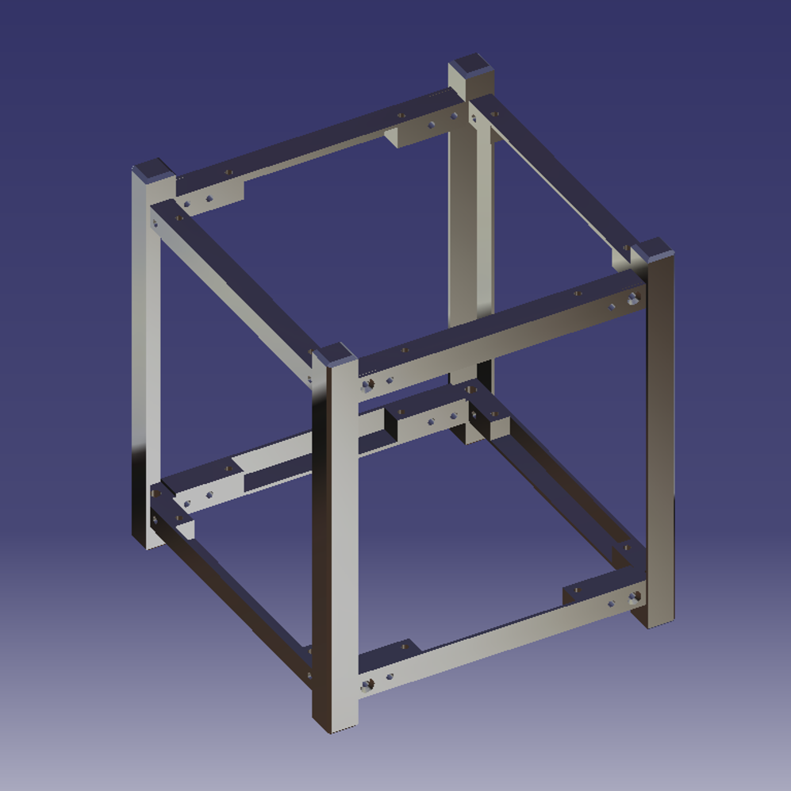
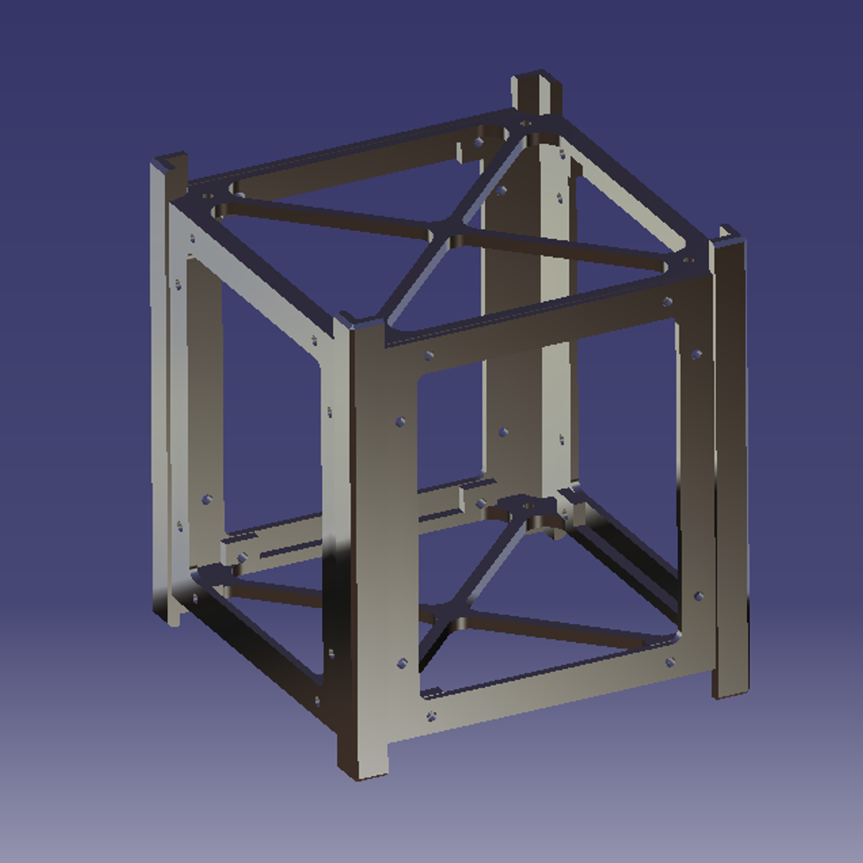
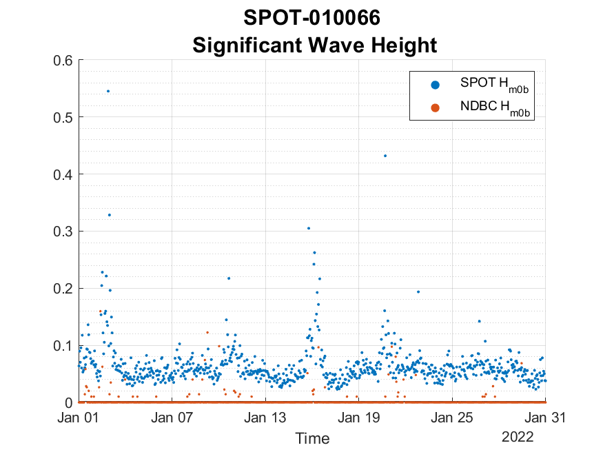

Personal Hobby CubeSat
At this point in my CubeSat design, I have developed two structure designs. The first is based around a 4x8x2-inch block of aluminum I have. This design would minimize weight but adds great complexity to manufacturing.
This second design would minimize simplicity where it adds some mass, but material fabrication methods are already familiar to the Embry-Riddle shop manager, with whom I am discussing this project.
I have also begun designing a custom maximum power point tracking electrical power supply (MPPT-EPS) system, as well as settled on a Raspberry Pi 4B as the on-board computer and either NASA's F-Prime (F') or core Flight System (cFS), bith of which are open-source with very helpful documentation.
Senior Design Project:
Project SENTINEL is a simulated proof-of-concept mission aiming to conduct optical Space Situational Awareness (SSA) on objects within the geostationary (GEO) belt. The spacecraft, a 3U CubeSat, will deploy in an equatorial orbit within 300 km of the GEO belt, taking multi-image collects of objects using a camera with a maximum capture distance of 3,000 km. The mission's objective period starts upon deployment into orbit with a projected lifetime of 2 years. The spacecraft must transmit data to the mission team daily, receive software updates, and adhere to compliance documents, such as GSFC-STD-7000 and MIL-STD-1246C. It must withstand environmental conditions, undergo end-to-end testing, and adhere to a budget cap of $250,000 USD. Additionally, a spacecraft development schedule, work breakdown structure, critical path, and concept of operations schedule must be created.
My work on this project has consisted of performing Test Engineering tasks, such as determining proper radiation hardening techniques and material thicknesses, ensuring adherence and survivability of launch and on-orbit temperature regimes, and defending against catastrophic disassembly as a result of vibrations and acoustic shocks from launch vehicle egress of the atmosphere. I have also simulated the orbit and downlink transmissions of our spacecraft in Systems Tool Kit (STK) and assigned it inertially pointing qualities so that the starfield in its image collects remains relatively stationery, while resident space objects appear to move.
Navy Internship
SOFAR Spotter Comparison
During the summer of 2023, I was employed through the Naval Research Enterprise Internship Program (NREIP) program at Stennis Space Center, Mississippi. During my tenure, I led a few projects and was able to surpass even my own expectations. Below are just a few images generated from two of five projects I led.
Project 1 dealt with the the calculation of significant wave height performed by the SOFAR Spotter drifting buoys deployed in the Gulf of Mexico. Data from these buoys was compared to that given by the National Oceanic and Atmospheric Administration's National Data Buoy Center (NOAA-NDBC).
The plot below was generated in MATLAB using a great circle mapping tool I developed to compare latitude and longitude of the drifting buoy to that of the moored, relatively stationery buoy. This tool then outputted nearest neighbor data so that the most accurate data could be compared between SOFAR and NOAA-NDBC buoys.

This result was used in a simple integrative sum as outined by the SOFAR Technical Reference Manual to calculate significant wave height.
From the plot below, I noted what seemed to be noise in the SOFAR buoy data, as calculated magnitudes of significant wave height were orders of magnitudes greater than that provided by the NDBC.
Ocean Bubble Depth and Windspeed Correlations
Project 2 was much more ambitious of my self and the United States Navy. Together, we aimed to correlate 10m windspeed above the oceans to the depth of bubbles within the oceans. At first, the project had slow progress and low correlations, but after 10 weeks of hard work, the plots below were produced.

Above is the plot of global ocean bubble depth for December of 2015 provided by the NASA/ CNES CALIPSO satellite. On the right half of the image, the Americas can be seen in the grey space left by unfilled data points.
Below is a similar plot, but it shows the global windspeed provided by the Advanced Microwave Scanning radiometer (AMSR) onboard the GCOM-W1 "SHIZUKU" and Aqua satellites.

Using the data from the two plots above, a corellation was made. What was once less than R = 0.2 has become as high as R = 0.65. In the case of December 2015, this was slightly less but still significant, as seen in the density scatter plot below.

Airfoil Design
During the Spring Semester of my Junior year of college, I led project in an attempt to design a novel airfoil in my experimental aerodynamics lab. The airfoil, as seen in the MATLAB plot below, revolves a NACA 5-series airfoil around its midline annf scales the result to maintain the thickness-to-chord ratio of the airfoil.

The CATIA Assembly of this wing section and the subsonic wind used in its testing are shown.

Once assembled by the team, the airfoil was required to undergo static load testing to simulate maximum aerodynamic loading on the wing section. A factor of safety was applied to this maximum and masses were loaded to the part both parallel and perpendicular to its chord.

The component is shown below in its fully integrated configuration with attached pressure port tubing, data aquisition device, and assembled wind tunnel are shown.